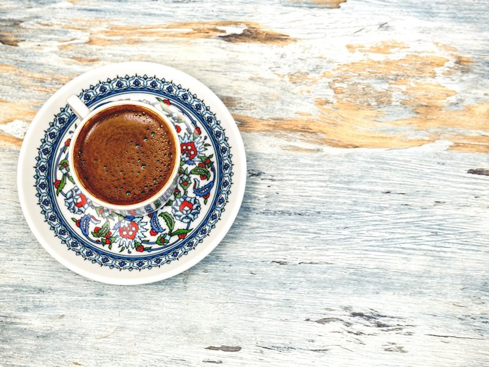
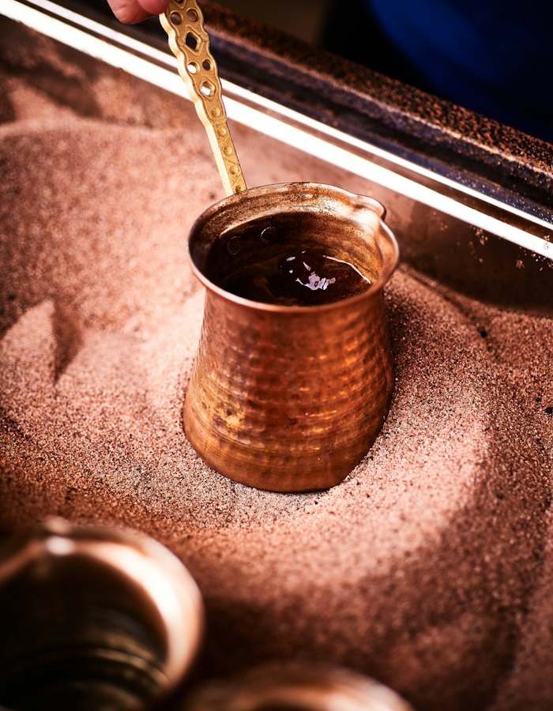
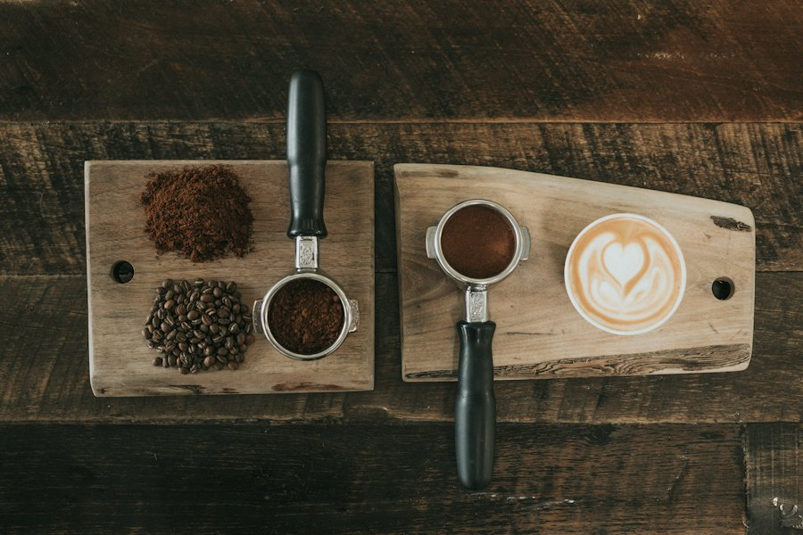
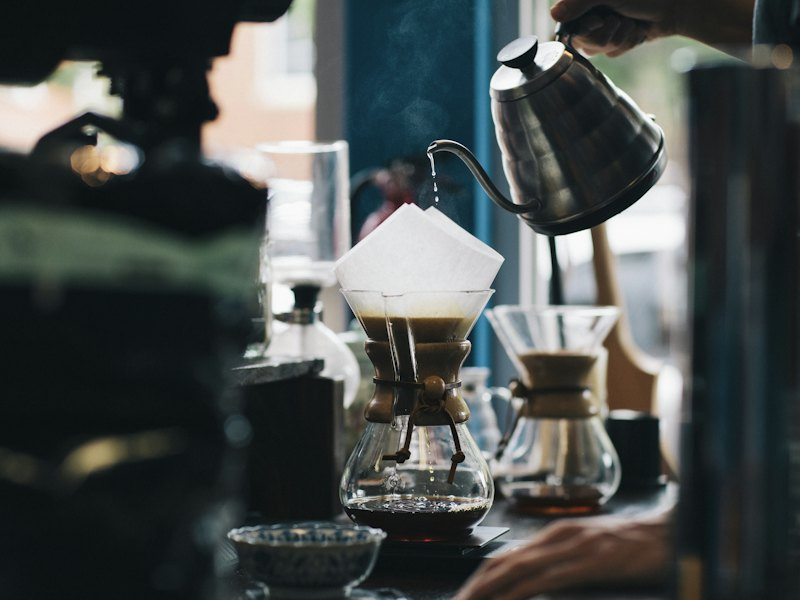

GelenekselTürk Kahvesi
₺140
İnce öğütülmüş çekirdekler bakır cezvede, kısık ateşte usulca pişer. Bol köpüklü, yanında lokum ve bir bardak suyla.
- Bitter kakao
- Fındık
- Kadife köpük
Yoğunluk

“Yâren” eski Türkçede dost demek.
Cezvenin köpüğünü, espressonun

Kavurmaya Türk kahvesinin köpüğüyle başladık; zamanla espressonun yoğunluğunu ve filtre kahvenin berrak aromalarını da sofraya ekledik. Yöntemler değişse de niyet aynı: iyi çekirdek, özenli el ve paylaşılan bir an.
Menüye göz atın →Her biri kendi ritmiyle demlenen, her biri bir başka sohbete eşlik eden üç imza kahve.

Geleneksel₺140
İnce öğütülmüş çekirdekler bakır cezvede, kısık ateşte usulca pişer. Bol köpüklü, yanında lokum ve bir bardak suyla.
₺120
Yüksek basınçla 25 saniyede çekilen, altın renkli kremasıyla kısa ama derin bir yudum. Tek ya da çift shot.

Modern₺150
Tek kökenli çekirdekler, elle ve yavaşça dökülen suyla demlenir. Hafif gövdeli, berrak ve meyvemsi.
Bir fincan kahvenin kırk yıl hatırı vardır.
Yâren'de kahve hiçbir zaman yalnız içilmez. Masaya bir fincan geliyorsa, yanında mutlaka bir sohbet, bir dost, bir hatıra vardır.
Misafirlerimizin fincan başında bıraktığı birkaç cümle.
★★★★★
Türk kahvesinin köpüğü tam annemin yaptığı gibi. Yanındaki lokum da cabası.
★★★★★
Kadıköy'de içtiğim en dengeli espresso. Kreması kalın, bitişi uzun.
★★★★★
Filtre kahvede narenciye notasını ilk kez bu kadar net aldım.
★★★★★
Cumartesi sabahlarımızın yeni adresi. Herkes kendi kahvesini buluyor.
★★★★★
Baristalar demleme yöntemlerini anlatırken insanın kahveye bakışı değişiyor.
★★★★★
Sıcak, sakin, ahşap kokulu. Kitabımı alıp saatlerce oturduğum yer.
Soru, öneri ya da sadece merhaba demek için bize yazın; en geç bir iş günü içinde dönüş yapıyoruz.
Mesajınız bize ulaştı. Kahveler bizden, cevabımız en kısa sürede sizde.